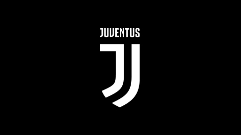

Juventus

Juventus Football Club colloquially known as Juve is a professional Italian football club in Turin, Piedmont. Founded in 1897 by a group of Torinese students, the club has worn a black and white striped home kit since 1903 and has played home matches in different grounds around its city, the latest being the 41,507-capacity Allianz Stadium. Nicknamed Vecchia Signora ("the Old Lady"), the club has won thirty-three official league titles, twelve Coppa Italia titles and seven national Super Cups titles, being the record holder for all these competitions; two Intercontinental Cups, two European Champion Clubs' Cup and UEFA Champions Leagues, one European Cup Winners' Cup, a national record of three UEFA Cups, two UEFA Super Cups and one UEFA Intertoto Cup.Consequently, the side leads the historical Federazione Italiana Giuoco Calcio (FIGC) ranking whilst on the international stage occupies the 4th position in Europe and the eight in the world for most confederation titles won with eleven trophies,having led the UEFA rankings during seven seasons since its inception in 1979, the most for an Italian team.